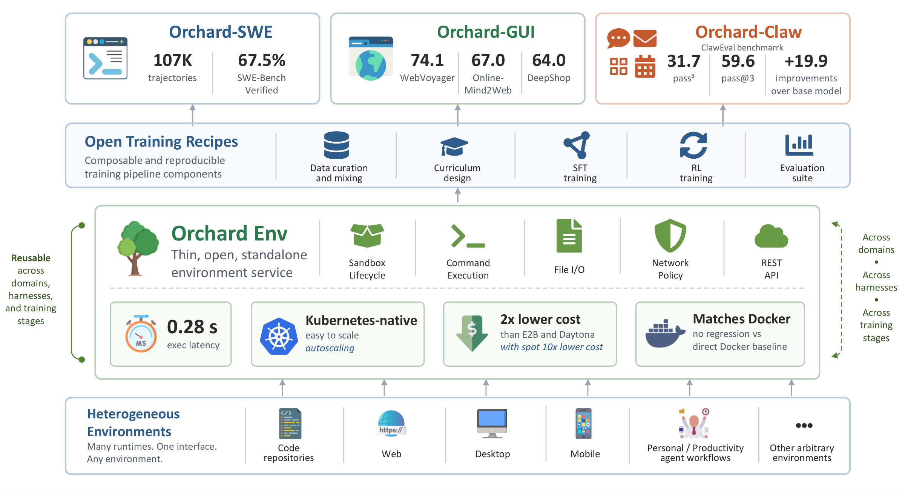
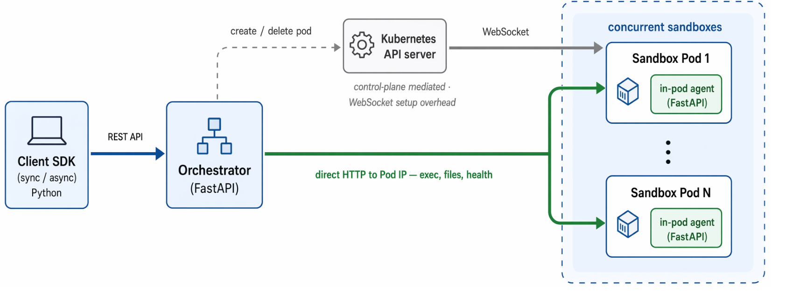
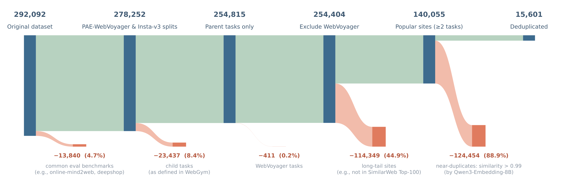
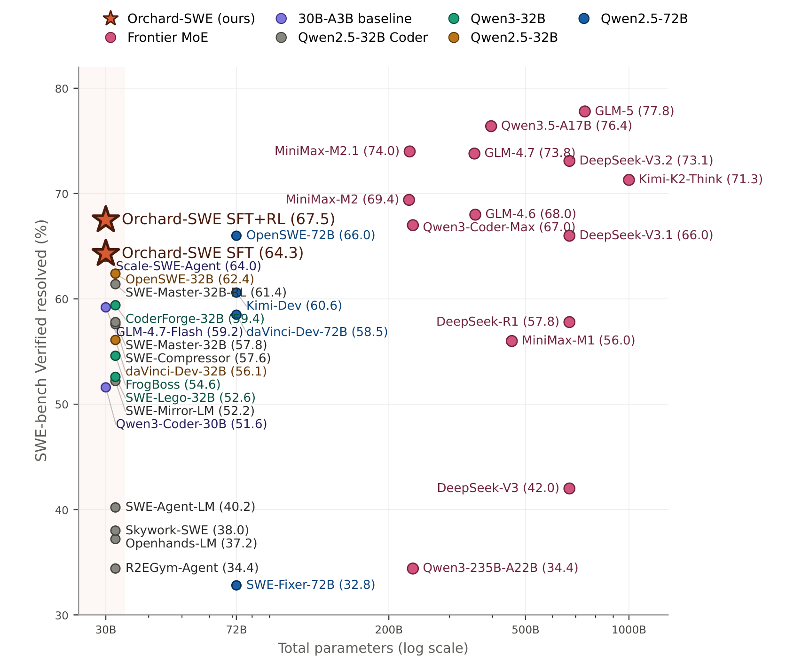

Orchard：一个面向 scalable agentic modeling 的开源框架
Orchard: An Open-Source Agentic Modeling Framework
①开源贡献 Open-source Artifacts
Orchard 把自己定位成「完整开源 release」：环境服务 + 训练 recipe + 三域轨迹数据集。截至解读日（2026-05-30）逐项核实：数据集（Hugging Face）确实可下载；代码仓库 microsoft/Orchard 已建立、采用 MIT，但 README 明确写着「Release on hold — we will release the code soon.」，即代码声称将开源、尚未真正放出。模型权重未见单独发布。下表区分「论文声称」与「实际可下载」。
| 类型 | 是否开源 | 内容 / 链接 |
|---|---|---|
| 代码 Code | 声称将开源 | github.com/microsoft/Orchard（MIT）。仓库结构已含 Orchard Env SDK（src/orchard/）、FastAPI orchestrator、in-pod agent、Azure AKS / Kubernetes 部署清单与示例；但 README 标注 Release on hold，代码内容尚未实际公开。三个训练 recipe（SWE/GUI/Claw）的训练代码论文称会随框架一并 release。 |
| 数据集 Dataset | ✔ 已开源 | huggingface.co/datasets/microsoft/Orchard（MIT）。含两个 subset：SWE 107,185 条多轮软件工程轨迹（横跨 2,788 个 GitHub repo，含 74,649 resolved + 32,536 unresolved，已匿名化，约 9.7 GB / 19 个 parquet 分片）；GUI 3,070 条 per-step browsing rollout（409 个 task、6 个 domain，每行带 screenshot 与 judge 给的 reward=1.0，约 1.25 GB）。 |
| 模型权重 Weights | ✘ 未单独发布 | 训练好的 Orchard-SWE / GUI / Claw checkpoint 未见 HF 模型页；backbone 为公开权重（Qwen3-30B-A3B-Thinking、Qwen3-VL-4B-Thinking）。 |
| 环境 / Benchmark | 环境随代码待放出 | 核心卖点 Orchard Env 即「环境服务」本身，随上面的 code 仓库一同声称将开源。评测用的 benchmark 均为第三方公开物：SWE-bench Verified、SWE-bench Multilingual、Terminal-Bench 2.0、WebVoyager、Online-Mind2Web、DeepShop、Claw-Eval。 |
| 项目主页 / Demo | ✘ 无 | 未提供独立 project page / demo；入口即上面的 GitHub 与 Hugging Face。 |
②研究动机与贡献 Motivation & Contribution
背景与问题
训练能多轮交互、用工具的 LLM agent（软件工程、网页导航、通用 computer use）有一个绕不开的环节：要在沙箱环境里大规模 rollout 轨迹。以一条 SWE 任务为例，生成一条轨迹要 clone 仓库、装依赖、改代码、跑测试套件，全程在一个需要被创建 / 管理 / 清理的隔离容器里完成；规模化时要同时跑成千上万个这种环境，各自镜像不同、资源不同、网络隔离要求不同。作者把这层叫 environment layer（环境层），并指出它是「开放、可复现的 agentic 研究」当前的 foundational bottleneck（基础瓶颈）。
现有方案各有各的别扭，作者梳理为三类：
- Managed sandbox 平台（E2B、Daytona、Modal）：托管运行时用起来方便，但研究者对基础设施配置、成本、可复现性几乎没有控制权，且按厂商定价、贵。
- 垂直整合的训练栈（ProRL Agent、MegaFlow）：把环境管理当作大训练系统的一个子模块，和 inference scheduling、reward 计算、训练循环编排耦合在一起。ProRL Agent 已经做了部分解耦（用 HTTP 服务把 rollout 与 trainer 分开），但其环境层仍通过
AgentHandler插件绑死在特定 agent harness 上，换 harness 就得改环境配置。 - 更宽泛的环境框架（ROCK）：平台功能很丰富，但没有把环境层切成一个最小的 service boundary。
这些做法的共同后果是：轨迹数据集、训练 recipe、评测 pipeline 往往被绑死在某个 harness 或某套基础设施上，难以复现、对比、复用。当底层环境是封闭的、或与某个训练栈刚性耦合时，它上面的每一层都会继承这些约束。
本文的切入点
作者的核心主张是：环境层应该是一个「薄的、独立的 service」（thin, standalone service），并且可以沿三条轴复用——(i) 跨 task domain、(ii) 同一 domain 内跨 agent harness、(iii) 跨 pipeline 阶段（trajectory distillation / on-policy RL rollout / evaluation）。一旦这个边界足够干净，上层就跟着「可复用」了：数据可以在一个 harness 下采集、在另一个 harness 下评测；SFT 与 RL 可以共用同一个执行后端；新 domain 直接复用同一套基础设施而不必重造。
更进一步，作者把这个主张提升为一个可被实证的科学问题：环境层是不是只是「基础设施」，还是它其实是决定 agentic modeling 产出物能否被复用 的「底座（substrate）」？三个跨域 / 跨 harness 的 recipe 就是用来回答这个问题的证据。
核心贡献
- Orchard Env —— 一个薄的、Kubernetes-native 的环境服务。只暴露通用原语（sandbox 生命周期管理、command execution、file I/O、network policy、REST API），不假设任何 agent harness / trainer / inference backend / task domain。两个关键工程选择：runtime agent injection（启动时由 init container 把自带的执行 agent 注入沙箱，从而任意 task-specific Docker 镜像无需改造即可运行）与 直连 Pod IP 的热路径（exec / file / health 请求绕过 Kubernetes API server 与 WebSocket 开销）。实测：平均 command-execution latency 0.28 s、1,000 沙箱压力测试 100% 成功、相对托管方案大幅降本（spot 价低至 Daytona 的 ~10%）。
- Orchard-SWE（软件工程 recipe）。从 MiniMax-M2.5 与 Qwen3.5-397B 蒸馏 107K 轨迹（跨 SWE-rebench / SWE-rebench V2 / Scale-SWE，并用 OpenHands 与 mini-swe-agent 两套 harness）；提出 credit-assignment SFT（用 retrospective value estimation 从失败轨迹里抠出「在进步」的 rise segment，把部分进展转成监督信号）；提出 Balanced Adaptive Rollout (BAR)（一种在线、按 prompt 自适应的 rollout 分配算法，为稀疏奖励 RL 组装「正负样本均衡」的训练组）。Qwen3-30B-A3B-Thinking 上 SWE-bench Verified 达 SFT 64.3% → SFT+RL 67.5%，同尺寸开源新 SOTA。
- Orchard-GUI（浏览器 GUI recipe）。仅用 0.4K 蒸馏轨迹 + 2.2K 开放式训练任务，训出 4B 的 VLM computer-use agent，WebVoyager / Online-Mind2Web / DeepShop 分别 74.1% / 67.0% / 64.0%（平均 68.4%），开源最强且追平 OpenAI / Gemini 的 proprietary 系统；并且反超了它自己 235B 的 teacher，说明 environment-grounded RL 能把能力推到 teacher 之上。
- Orchard-Claw（个人助理 recipe）。仅 0.2K 合成任务，Claw-Eval 上 $pass^3$ 31.7% / pass@3 59.6%，显著超同尺寸开源 baseline；推理时换上更强的 ZeroClaw harness 后，同一个模型进一步升到 $pass^3$ 41.0% / pass@3 73.9%——直接验证了「跨 harness 迁移」这一复用主张。
- 系统性的「复用」证据。三个 recipe 共用同一个 Orchard Env，跨 domain、跨 harness、跨 pipeline 阶段；并通过 cross-harness 消融（同数据同 recipe，只换训练 harness）证明「单 harness 训练会被 harness 锁死」，从而论证多 harness 训练的必要性。
③方法 Method
整篇方法可以拆成「一个底座 + 三个 recipe」。底座是 Orchard Env，定义了环境层应该暴露什么、怎么扩展、为什么便宜；三个 recipe 是在这个底座上分别为 SWE / GUI / Claw 做的数据采集、curation、reward、policy optimization。下图是全框架总览。

3.1 Orchard Env：薄环境服务的三层架构
Orchard Env 采用三层架构（见下图）：Client SDK（同步 SandboxClient / 异步 AsyncSandboxClient 的 Python 客户端）→ Orchestrator（FastAPI 服务，作为 Kubernetes Deployment 多副本部署，可把 sandbox 元数据托管到 Redis）→ 注入到每个沙箱里的 in-pod agent（一个轻量 FastAPI server，跑在容器内，暴露 /exec、文件上传 / 下载 / 列举、health check）。

kubectl exec / WebSocket 的建链开销。（出处：原文 Figure 3，从 PDF 第 5 页裁剪）这套三层切分背后是三个刻意的设计选择：
- 控制面 / 数据面分离。生命周期决策（创建、删除、就绪）走中心 orchestrator；逐条命令的执行流量直接打到各沙箱的 in-pod agent，把对延迟敏感的「热路径」从控制面里剥出来。
- Agent injection（运行时注入而非 build 时打包）。in-pod agent 在 pod 启动时由 init container 拷进用户提供的镜像，于是任意 task 镜像无需逐镜像改造就能接入——这正是它能撑住 SWE-bench 那种「上百种异构镜像」的关键。
- 纯标准 Kubernetes 原语。整栈跑在 Pod / NetworkPolicy / Watch 之上，天然继承多云可移植性、开源生态工具，以及 cluster autoscaling、spot 实例这类成本优化。
orchestrator 内部有几个值得记的组件：PodWatcher（维持一条持久的 Kubernetes LIST+WATCH 流，缓存 pod 状态、在 pod 就绪时唤醒被阻塞的 client）、ExecManager（把执行请求路由到目标沙箱的 Pod IP，并用 per-sandbox 锁串行化对同一沙箱的并发请求）、以及一个后台 reconciliation loop（清理 heartbeat 过期或后端 Pod 被驱逐的孤儿沙箱）。SDK 还带指数退避重试。
3.2 Orchard-SWE：credit-assignment SFT + BAR
SWE recipe 针对开源 SWE-agent 训练的两个瓶颈：监督信号有限与奖励稀疏。任务沿用 SWE-bench 形式（给定 GitHub issue + 仓库快照，agent 产出能通过 gold 测试套件的补丁），主评测 benchmark 是 SWE-bench Verified（500 条人工校验子集）。harness 用 ReAct 风格的多轮 loop，且刻意用两套 harness（OpenHands + mini-swe-agent）采集，以研究 harness 设计对轨迹与下游训练的影响。
数据（Table 5）。107,185 条轨迹来自三个任务源（SWE-rebench、SWE-rebench V2、Scale-SWE）与两个 teacher（MiniMax-M2.5、Qwen3.5-397B），其中 74,649 resolved + 32,536 unresolved。和多数只留成功轨迹的做法不同，Orchard 把失败轨迹也留下来。过滤规则：去掉超 64K token 的轨迹、去掉含 harness 不支持的工具调用的轨迹（主要来自 Qwen3.5-397B）、去掉语法非法 / 不可解析的动作。最终轨迹平均 47.5 轮、约 21K token。
Stage 1 — credit-assignment SFT。这是本文 SFT 的特色。对每条失败轨迹 $\tau=(s_0,a_0,s_1,\dots,s_T)$，用该轨迹自己的 teacher 当一个 zero-shot 回溯式 value function：把整条轨迹连同最终（失败的）结果一起喂给 teacher，让它在每一步 $t$ 估计「给定历史 $h_t=(s_0,a_0,\dots,s_t)$，最终能解决 issue 的概率」
$$V(s_t)\;=\;\mathbb{P}\big(\text{resolve}\,\big|\,h_t,\ \text{outcome}\big).$$这里 $V(s_t)$ 就是「在第 $t$ 步时这条轨迹未来成功的可能性」。因为判断是回溯且条件于已知结果的，这条 value 曲线和真实进展校准得很好：作者标注的轨迹里 98.9% 呈现「倒 U」形——在探索期升高、在临近失败提交时回落。teacher 只标注稀疏的关键步、其余插值，得到逐步曲线 $V(s_0),\dots,V(s_T)$。
然后定义每一步的 credit 为 value 的时序差分（往上抬多少）：
$$c_t\;=\;V(s_{t+1})-V(s_t),$$并抽取 rise segment（上升段）：满足 $c_t\ge\varepsilon$（$\varepsilon=0.05$，过滤标注噪声）的极大连续子序列 $[t_i,t_j]$。这些上升段通常很短（中位数约 2 步），但恰好是一条整体失败轨迹里「真正有产出」的部分——仓库导航、文件定位、部分 root-cause 分析。SFT 目标是标准的 next-token 交叉熵，但只在动作 token 上算 loss、且 mask 掉环境观测：
$$\mathcal{L}_{\text{SFT}}\;=\;-\!\!\sum_{t\in\mathcal{S}(\tau)}\!\log\pi_\theta\!\big(a_t\,\big|\,h_t\big),$$其中 $\mathcal{S}(\tau)$ 是参与 loss 的动作 token 集合。对成功轨迹，$\mathcal{S}(\tau)$ 是整条轨迹的所有动作 token（相当于一个贯穿全程、终值为 1 的「段」）；对失败轨迹，$\mathcal{S}(\tau)$ 只限定在抽取出来的 rise segment 内的动作 token（前面的历史作为 context 保留）。这样 32,536 条失败轨迹就贡献了「探索导向」的监督，补足了「只学成功 solve-and-submit」之外的信号。训练用 Qwen3-30B-A3B-Thinking + slime 框架，5 个 epoch、global batch 128、64K context、cosine 学习率 $10^{-5}\!\to\!10^{-6}$；推理时把 context 放宽到 128K。
Stage 2 — RL with Balanced Adaptive Rollout (BAR)。从 SFT checkpoint 出发，奖励是二值且 environment-grounded 的：最终补丁通过 gold 测试 +1，否则 −1。这一步对 Orchard Env 的 0.28 s 执行延迟极度敏感（每条 rollout 都要几十次环境交互，吞吐直接由沙箱响应度决定）。RL 系统基于 slime，拆成四个松耦合服务：Policy Trainer（Megatron-LM，张量 / 流水 / expert / context 并行，用 advantage-weighted policy gradient 更新）、Rollout Inference Service（SGLang，支持 KV-cache 复用、确定性采样、per-token log-prob 抽取）、Sandboxed Execution Service（即 Orchard Env）、Agentic Loop Driver（每条样本一个异步协程，串起 inference 与 sandbox 的工具调用循环）。整体异步流水化（trainer 更新第 $k$ 组权重时，rollout manager 已经在发第 $k\!+\!1$ 组的生成）。
BAR 解决标准 GRPO 固定 $N$ 组采样的两个毛病：(1) 算力浪费——policy 在某 prompt 上要么全对要么全错时，整组 reward 方差为 0、advantage 为 0、被静默丢弃，但 $N$ 条长 rollout 的环境成本已经花掉了；(2) 组内不平衡噪声——成功率远离 0.5 时，即便「非退化」组也被正例或负例主导，GRPO advantage 偏向被过度代表的那一类。BAR 的做法是 在线、按 prompt、基于 stride 的渐进式组装：每次并行生成一个 stride 的轨迹、打分、把正 reward 与负 reward 分到两堆（aborted / 超时的丢进 backfill 堆），尝试组装一个恰好 $N$ 条、正例占比落在目标区间 $[\rho_{\min},\rho_{\max}]$、且最接近理想比例 $\rho^\star=(\rho_{\min}+\rho_{\max})/2$ 的训练组；每类内部按终止状态排序（completed > truncated > aborted）以偏好简洁、规范收尾的轨迹。能拼成就早停返回；否则继续生成直到预算 $N_{\max}$；实在拼不出就放宽 / 兜底（见 Algorithm 1）。
于是 BAR 表现为一种 anytime、自定步速的 rollout 调度：简单 / 已掌握的 prompt 第一个 stride 就极偏正，触发「不再生成」（被过滤或用最少正例满足下界）；难 prompt（正例稀少）持续生成直到攒够或耗尽预算；均衡 prompt 在第一个 stride 附近就收手，给出信息量最大的梯度。它对 group-relative estimator 是即插即用的（GRPO / GSPO 都行），因为它要满足的契约只是「每个 prompt 返回 $N$ 条」。组内 advantage 用组奖励标准化：
$$A_{i,t}\;=\;\frac{r_i-\operatorname{mean}(\{r_1,\dots,r_N\})}{\operatorname{std}(\{r_1,\dots,r_N\})}.$$RL 阶段还在 reward 计算后、入训练 batch 前加了一个 group-level filter（丢掉无可用学习信号的整组，再从超采的 prompt 里补一组），从而把训练 batch size 和生成 batch size 解耦。RL 最多 150 步、global batch 128、rollout batch 16、训练组 $N=8$、$N_{\max}=16$、stride $s=16$、目标区间 $[\rho_{\min},\rho_{\max}]=[0.375,0.625]$。RL 数据从「SFT 没用过的 SWE-rebench V2 Python 子集 + Scale-SWE」里筛 $0<\hat p\le 0.5$ 的任务（用初始 SFT checkpoint 8 次 rollout 估难度），最终约 2K 条。
3.3 Orchard-GUI：把同一套底座搬到多模态浏览器 agent
任务形式：给定 start_url 与自然语言意图（如「在 Amazon 上找一个可水洗、长度至少 30 英寸的狗窝」），agent 在浏览器里操作并产出自然语言答案 / 执行动作，由 LLM-as-a-judge 依据最终回答与 screenshot 轨迹判成败。评测 WebVoyager、Online-Mind2Web、DeepShop（与 FARA、Molmo-Web 同协议）。harness 刻意用通用的 ReAct 风格 loop 而非定制的 Browser-Use，以避免 harness 特有效应、并支持「跨域可迁移」的统一范式。动作空间是 13 个原子工具（按 OpenAI tool-calling 接口）：click / write / press_keys / scroll / wait / drag / hover / goto_url / go_back / new_tab / switch_tab / close_tab 以及终止用的 done(response)（见 Table 11）。所有交互跑在 Orchard Env 沙箱里的隔离 Playwright-Chromium（2 vCPU / 8 GiB）。一个工程细节：因为单张 screenshot 能膨胀到上千 vision token，作者只在 context 里保留最近 $k$ 张 screenshot（早期 screenshot 的可用信息已蒸进 agent 的 reasoning trace），从而把 context 压下来。

三段式数据管线。(i) 把原始任务意图过滤成干净的 seed pool（上图，15,601 条）；(ii) 用 Qwen3-VL-235B-A22B-Thinking 作唯一 teacher，对每个 seed 任务在 Orchard Env 里采 4 条独立 rollout（原始约 62,395 条），用 GPT-4.1 当 judge 给二值 reward；(iii) judge 过滤 + 质量 curation 产出 SFT / RL split。关键观察：68.4% 任务至少有一条 rollout 成功、26.3% 四条全成、31.6% 全失败（其中相当一部分是 captcha 等环境性失败而非 agent 不行）。SFT 故意只挑一个小而精的子集（避免在 imitation 数据上过饱和、把模型推进难以靠 RL 逃出的窄模仿区间）：每个任务只留最短的成功轨迹、每个网站最多 $K=20$ 条，最终 SFT 语料 412 条、覆盖 70 个网站。RL 任务池在同一管线上用更严的去重阈值（0.95）得到 2,198 条。
两段式训练。SFT 从 Qwen3-VL-4B-Thinking 初始化，每个 assistant turn 生成一条训练样本，只在最后那个 target assistant turn 上算 loss、mask 掉系统 / 历史 / 环境观测；冻结 vision encoder 与多模态 projector、只更新语言模型权重（保住截图 grounding 能力、把 SFT 容量集中到 agent 专属的 reasoning 与动作预测上）；3 epoch、peak lr $10^{-5}$、cosine + 10% warmup、global batch 128。RL 用多轮 GRPO 变体：reward 把「确定性 format check」与「GPT-4.1 judge」结合（每个 turn 都解析成合法 <think>+tool-call 且最终 done(response) 被判 SUCCESS 才 +1）；用非对称 PPO clipping（$\epsilon_{\text{low}}=0.2,\ \epsilon_{\text{high}}=0.28$）、无 KL / entropy 正则、刻意省掉 per-trajectory $1/T_i$ 归一化（不下调长 / 难任务的权重）；用 DAPO 式 trajectory-level 动态采样丢掉全 0 / 全 1 的组，并把 judge API 失败、captcha-aborted 的 run 经 remove_sample 置零 loss mask（不让基础设施噪声泄进 policy）。还有 step-budget curriculum：先把每轮步数上限设 15 跑到饱和，再从该 checkpoint 把上限提到 30 继续（短 horizon 阶段在「15 步内能解的任务」上廉价地拿密集奖励，长 horizon 阶段把 policy 扩展到真正需要更多交互的难任务）。
3.4 Orchard-Claw：个人助理与跨 harness 迁移
任务是多步日常工作流（如「整理我的收件箱——哪些邮件要回、哪些是通知、哪些是垃圾」），agent 调 gmail_list_messages、gmail_get_message 等工具完成。评测用 Claw-Eval，它在 agent 完成后审计整条轨迹，按三个维度合成单一任务分：
$\text{task\_score}\ge 0.75$ 记为通过。harness 同时用两套：Claw-Eval 自带的 ReAct 风格 harness，与 ZeroClaw（流行的 OpenClaw 的一个更快的、轻量 Rust 版本）harness，二者都在 Orchard Env 沙箱里（2 vCPU / 2 GiB，预装 ClawEval 与 ZeroClaw）。因为 claw-agent 还很新，作者先用 Claude Opus 4.6 通过四步 loop 合成任务（提议并过滤任务想法 → 生成环境 / 文件 / 工具 server / 测试脚本 → 用 MiniMax-M2.5 当 solver 跑 rollout → 据 rollout 反馈精修任务以确保可行 / 指令清晰），每条任务平均成本 4.9 USD，共 192 条任务（在 Claw-Eval 与 ZeroClaw 两套 harness 间共享）。轨迹只蒸馏 MiniMax-M2.5 一个 teacher，每个任务采 5 条、只留完成的；对 ZeroClaw 这类复杂 harness，作者实现了一个 proxy LLM server 记录 rollout 期间每一次 LLM 调用的 (input, output)，组回成轨迹用于 SFT（也用于 RL 的 reward 计算）。最终 561 条轨迹、4537 个训练 pair。训练同样两段式（SFT 1 epoch + 标准 GRPO，batch 8、组 8、150 步），backbone 仍是 Qwen3-30B-A3B-Thinking，关键是 SFT 与 RL 都在「目标 harness」上端到端训练，以研究这种训练能否让模型学会利用 ZeroClaw 这种更强 harness 的高级能力（subagent、auto-compact 等）。
④实验评估 Evaluation
评测设置
- Benchmark： 系统层——Terminal-Bench 2.0（验证环境层零回归）、execution latency 与 1,000 沙箱压测、成本估算； SWE——SWE-bench Verified（主，500 条人验子集，指标 resolve rate / 越高越好）、SWE-rebench V2、SWE-bench Multilingual、Terminal-Bench 2.0（测跨域 / 跨 harness 泛化）； GUI——WebVoyager（15 个热门站、相对短 horizon）、Online-Mind2Web（站点分布广、更长 horizon）、DeepShop（购物垂域、需事务推理）； Claw——Claw-Eval（指标 $pass^3$ 与 pass@3）。
- 对比基线：SWE 比同尺寸 / 更大尺寸的开源 SWE-agent recipe（OpenSWE-32B/72B、SWE-Master-32B-RL、CoderForge-32B、Kimi-Dev-72B、Scale-SWE-Agent、GLM-4.7-Flash-30A3B 等）与 frontier MoE；GUI 比 proprietary VLM（GPT-5、Gemini-3、OpenAI / Gemini computer-use-preview）与开源 agent（Molmo-Web-4B/8B、Fara-7B、UI-TARS、GLM-4.1V 等）；Claw 比 SOTA 大模型（Claude Opus 4.6、GPT-5.4、Gemini 3.1 Pro 等）与同尺寸开源（Nemotron-3-nano-30b-a3b、Qwen3-Coder-30B-A3B 等）。
- 指标方向：resolve rate / success rate / pass@3 / $pass^3$ 均越高越好；latency 与 cost 越低越好。
主要结果

① Orchard-SWE（Table 7）。SFT 64.3% → SFT+RL 67.5%，同尺寸（30B-A3B / ~3B active）开源新 SOTA：
| 方法 | Backbone / Harness | Resolved (%) |
|---|---|---|
| Qwen3-30B-A3B-Instruct（base） | — / OpenHands | 22.0 |
| SWE-Master-32B-RL | Qwen2.5-Coder-32B / R2E-Gym | 61.4 |
| OpenSWE-32B | Qwen2.5-32B / SWE-Agent | 62.4 |
| Scale-SWE-Agent（同尺寸最强对手） | Qwen3-30B-A3B / OpenHands | 64.0 |
| Kimi-Dev-72B | Qwen2.5-72B / Agentless | 60.6 |
| OpenSWE-72B | Qwen2.5-72B / OpenHands | 65.0–66.0 |
| Orchard-SWE (SFT) | Qwen3-30B-A3B-Thinking / mini-swe-agent | 64.3 |
| Orchard-SWE (SFT+RL) | Qwen3-30B-A3B-Thinking / mini-swe-agent | 67.5 |
读数：最干净的「同家族 apples-to-apples」是和 Qwen3-30B-A3B-Instruct 比——SWE-bench Verified 从 22.0% 抬到 64.3%（SFT）再到 67.5%（SFT+RL），绝对提升 45.5 个点，并超过更大的 dense 72B 系统。frontier proprietary（Claude Opus 4.5、GPT-5.2、Gemini 3 等）在该 benchmark 上 71–77%，Orchard-SWE 用约 3B active params 已逼近。注意单 benchmark 数字对 harness 选择敏感：同一个 SFT checkpoint 在 mini-swe-agent 下 64.3%、在 OpenHands 下 62.1%。
② Orchard-GUI（Table 13）。SFT+RL 后 WebVoyager / Online-Mind2Web / DeepShop = 74.1 / 67.0 / 64.0，平均 68.4%：
| 系统 | WebVoyager | Online-M2W | DeepShop | Avg |
|---|---|---|---|---|
| OpenAI computer-use-preview（proprietary） | 70.9 | 58.3 | 24.7 | 51.3 |
| Gemini computer-use-preview（proprietary，最强） | 88.6 | 57.3 | 62.0 | 69.3 |
| Molmo-Web-8B（开源最强先前） | 78.2 | 35.3 | 42.3 | 51.9 |
| Qwen3-VL-235B-A22B-Thinking（teacher） | — | 63.1 | 56.7 | 61.2 |
| Orchard-GUI-4B (SFT) | 60.2 | 47.0 | 48.7 | 52.0 |
| Orchard-GUI-4B (SFT+RL) | 74.1 | 67.0 | 64.0 | 68.4 |
读数：四个发现——(a) 用 4B + 仅 2.6K 任务就做到开源最强、并追平最强 proprietary（Gemini 69.3% avg）；(b) 在分布更广的 Online-Mind2Web 与垂域 DeepShop 上分别比最强开源 Molmo-Web-8B 高 +31.7 / +21.7 个点，还反超自己 235B 的 teacher（+3.3 / +7.3）——说明 environment-grounded RL 能挖出 teacher 自己都没展现的能力；(c) RL 从 SFT checkpoint 起比从 base 起评测成功率更高、reward 优化更稳（SFT-init 收敛到 >50%，base-init 长期 <40%），即 SFT 提供了稳定探索的行为先验；(d) 最大增益出现在「站点分布最广」的 Online-Mind2Web，说明 judge-grounded RL 在「相对小但多样」的任务池上能跨开放网络泛化，而不是只适配窄站点集。RL 在三个 benchmark 上分别贡献 +13.9 / +20.0 / +15.3 个点（平均 52.0 → 68.4）。
③ Orchard-Claw（Table 14 / 15）。原生 ReAct harness 下 $pass^3$ 31.7% / pass@3 59.6%，显著超同尺寸开源（Qwen3-Coder-30B-A3B-Instruct pass@3 49.7%、Nemotron-3-nano 57.8%）；RL 在 SFT 基础上贡献 +9.3（$pass^3$）/ +9.3（pass@3）。最有意思的是 cross-harness（Table 15）：把同一个 Orchard-Claw (SFT+RL) 换上 ZeroClaw harness，$pass^3$ 升到 41.0%（+9.3）、pass@3 升到 73.9%（+14.3），是表中所有模型里跨 harness 增益最大的；相比之下 Qwen3-Coder-30B-A3B-Instruct 换 harness 几乎不涨甚至略降。
消融 / 分析
- 数据规模 vs 选择策略（Table 9，SWE）。在 $N\in\{512,1024,2048\}$ 与 6 种选择策略的网格上，「数据规模」在每个档位都压倒「选择策略」：把数据从 512 翻到 2048，在最差策略上涨 +8.2 个点，远大于 $N=512$ 时所有策略间 5.5 个点的最大差异；且策略间差异随 $N$ 单调收窄（5.5→3.2→2.0）。即数据足够多时，怎么选样本就不那么重要了。但纯 SFT 在 $N=2048$ 也只到约 54%，加上完整 107K 语料 + RL 才到 67.5%。
- credit-assignment SFT 的贡献（SWE）。scale-matched 对照：从全 resolved 池里抽 32K 条作 resolved-only baseline（与 32,536 条 rise segment 等量），SWE-bench Verified 59.3%；改成「32K resolved + 32K rise-segment」后升到 61.2%（+1.9）。证明从「本会被丢弃的失败轨迹」里抠出的监督是有用信号、不是拟合噪声；在完整 74.6K resolved 语料上这个信号继续叠加，撑起 64.3% 的头条数。
- cross-harness 泛化（Table 10，SWE，决定性消融）。同数据（12K resolved，MiniMax-M2.5 teacher）同 recipe，只换训练 harness：对角线（训练 / 评测 harness 一致）53.5–57.9%，但错位时塌到 19.0–28.0%。说明 tool-call 格式、观测结构、轮级约定与训练 harness 紧耦合，没有任何单一 harness 的训练语料能产出在整个 harness 生态里都泛化的 agent——多 harness 训练是必要的。Section 3.5 还给出真实世界印证：单 harness 训练的 Scale-SWE 换 harness 直接产出非法输出（resolve rate 归零），OpenSWE-32B 换到 Kimi-CLI 掉 58.8 个点；而 Orchard-SWE 在三套 harness 上稳定在 45.0–64.3%，跨域到 Terminal-Bench 2.0 还能保 20.1%（OpenSWE-32B 归零）。
- RL 与 SFT 强度的关系（SWE）。从「中等 SFT」（Composite/$N$=512，48.1%）起做 RL，in-distribution 与 OOD 双双提升（Verified +2.0、Multilingual +6.7）；从「重度 SFT」（完整 107K，64.3%）起做 RL，Verified +3.2 但 Multilingual 略降——重度 SFT 把 policy 压到训练分布的尖峰模式上，on-policy 精修锐化了 in-distribution 行为却牺牲了 OOD 迁移。
⑤洞见 Insights
1. 环境层是「复用的底座」，不只是基础设施。本文最核心、也最可迁移的判断是：把环境管理切成一个薄的、harness-agnostic 的 service boundary，会让它上面的 数据 / SFT / RL / evaluation 全部变得可复用——数据在一套 harness 采、在另一套评；SFT 与 RL 共用同一执行后端；新 domain 直接复用而非重造。三个 recipe 共用同一个 Orchard Env，就是对这个论点的实证。
2. 失败轨迹里藏着可用监督。credit-assignment SFT 用 teacher 做回溯式 value 估计、抽出「上升段」，把通常被丢弃的失败轨迹变成 +1.9 个点的真实增益。这是一个对所有稀疏奖励 agent 训练都通用的「数据回收」思路。
3. 单 harness 训练会被 harness 锁死；environment-grounded RL 能超越 teacher。对角 / 错位 53.5% vs 19–28% 的鲜明落差，把「multi-harness training 是必要的」从直觉变成了可控实验结论；而 GUI 4B 反超 235B teacher（Online-M2W +3.3、DeepShop +7.3）则说明在真实环境里用 judge 当 reward 做 RL，能挖出 teacher 自身都没展现的能力，而非简单蒸馏天花板。
局限与未来
作者自己点出的边界：(1) 泛化没被解决。Orchard-SWE 在完全没见过的 harness（Kimi-CLI）/ domain 下的掉点仍然显著（Verified 64.3% → Kimi-CLI 45.0%），entirely-unseen 条件仍是真问题；多 harness 训练只是缓解、并未消除。(2) Claw 是 preliminary。claw-agent 还新，全部建立在 192 条合成任务上，结论的稳健性有限。(3) 重度 SFT 牺牲 OOD。RL 在重度 SFT 上会略损 cross-distribution 迁移，如何平衡 in-distribution 锐化与 OOD 保留是开放问题。我自己补充两点：其一，代码尚未真正放出（README「Release on hold」），Orchard Env 这个最核心的卖点目前无法第三方复现，框架价值要等代码 release 才能完整兑现；其二，GUI / Claw 的 reward 依赖 GPT-4.1 这类外部 LLM judge，judge 自身的偏差与 API 噪声（论文已用 remove_sample 缓解）可能成为可复现性的隐性变量。
与相关工作的关系
论文把 agentic 训练的基础设施分两个范式：整合式（环境是大训练系统的子模块，如 MegaFlow 把 Model / Agent / Environment 三件套协同设计、ProRL Agent 用 HTTP 把 rollout 与 trainer 分开但环境仍经 AgentHandler 绑死 harness）与解耦式环境服务（E2B / Daytona / Modal 把 sandbox 暴露成独立 service，但是 managed、缺少 RL 训练所需的细粒度控制如可调资源上限、heartbeat 生命周期、per-sandbox 网络隔离，且贵）。Orchard Env 的定位是「解耦式」的开源版，且其差异化技术选择是 agent injection（让任意镜像免改造接入，从而撑住 SWE-bench 的镜像异构性）。在 SWE 方向，它和 SWE-agent / OpenHands（scaffold）以及 SWE-smith / BugPilot（造数据）正交——Orchard 不造新任务，而是用多 teacher 蒸馏 + 失败轨迹偏序监督来「提升数据质量」；并明确从 SkyPilot（可作为其底层多云 compute orchestration）、ROCK（更宽的环境框架）等工作中区分自己「最小 service boundary」的定位（与 SkyPilot 互补而非竞争）。